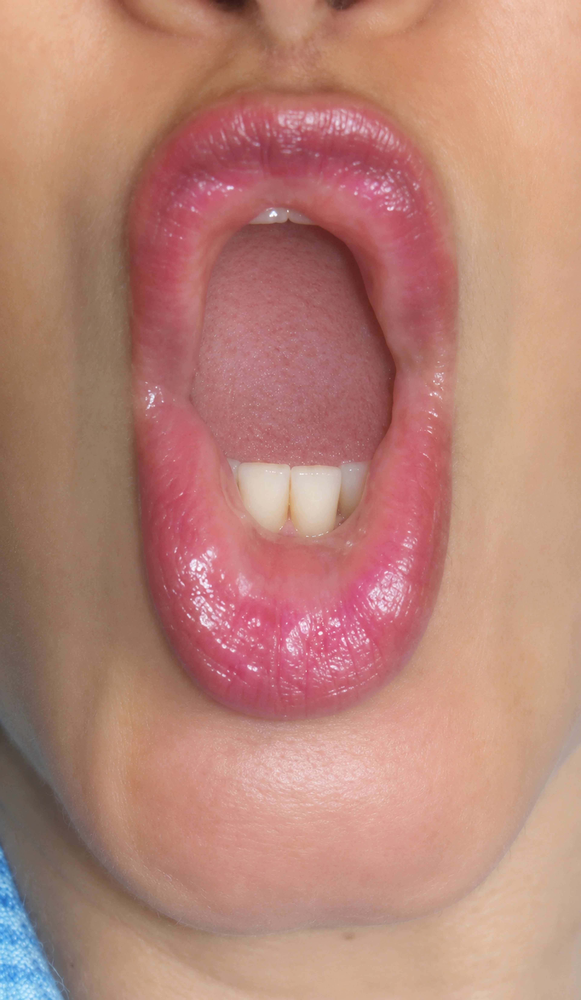

Técnica · salto de octava
El último compás del «Signore, ascolta»
La frase final del aria de Liù en Turandot de Puccini termina con un salto de octava, de La3 a La4, seguido de una segunda hasta el Si4. Si se resuelve la octava, la segunda se resuelve por añadidura.
La estrategia
La boca se prepara para la nota grave como si fuera a emitir directamente la aguda, y en esa posición se cantan las dos. No se busca el agudo elevando el rostro: todas las notas quedan en el mismo punto, el vómer, sin más esfuerzo del necesario. La estrategia sirve para todas las octavas.
La ejecución
Para el La3, la mandíbula protruye hacia delante y en diagonal, y el labio inferior cae mostrando los dientes de abajo. Una vez sostenida la nota, se lleva un poco más hacia delante la musculatura que une el labio inferior con el pliegue de la mandíbula. Es un movimiento milimétrico, con la intención de la vara de un trombón, y con él se emite el La4.
Para el Si4, la porción central del labio superior se eleva. Las comisuras siguen próximas y la boca toma una forma ovoide. Los armónicos acompañan al sonido fundamental y el agudo sale brillante e intenso.
El texto: «Ah, pietà»
En la «p» de «pie-» no se mueve la posición de la boca: solo se insinúa un acercamiento de la porción central de los labios, sin abrir las comisuras en sonrisa. Para la «e» se piensa una «a», porque la «e» es una vocal cerrada y en el agudo aprieta el sonido. Si la «t» de «tà» complica la emisión, puede pensarse como una «k» sin cambiar la boca. El público oirá perfectamente «Ah, pietà».
Lo que importa es que el sonido se emita sin dificultades técnicas para el rostro y afinado.
Para practicar: canta primero toda la frase con la vocal «a» hasta que la caída de la mandíbula salga con facilidad.

Fuente: Adaptado de la entrada «Aria: Signore ascolta. Ópera Turandot. Puccini. Cómo cantar el último compás» del blog de Carmen Moreno, 22 de marzo de 2015. Leer el original ↗